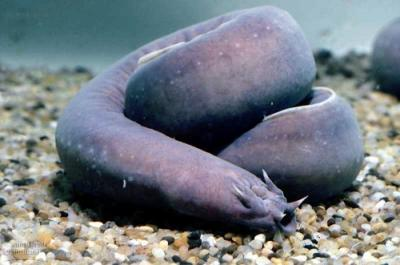
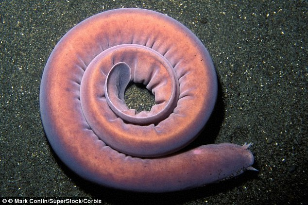
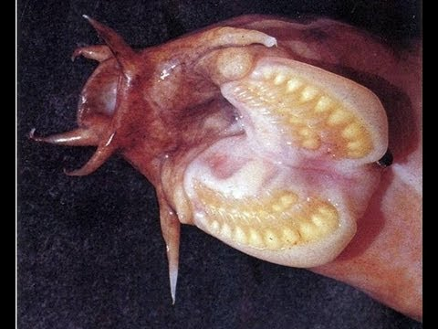
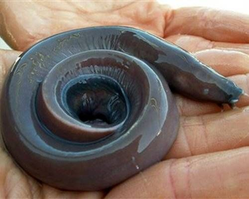

Welcome
On this website you will find information about a quite unknown enimal: the hagfish.
This creature does not only have some interesting characteristics you will find out about,
but is also used in some culinair recipes. You will find some recipes on this website as well.
And last but not least you will find videos and pictures, so sit back and relax.

Source picture: The Ethogram
Body features
The hagfish is a maritim creature, that has some similarities with the eel. One of the key-feature of the hagfish is
that it can produce a lot of slime when it is under distress. Hagfish is therefore, wrongly, somtimes refered to as
slime eel. The hagfish has a relative long and thin body. It's skin lacks scales, and has a leathery texture. The average
hagfish has a body-length of around the 50 cm, however there are differend kinds of hagfish, with a variety of lengths.
The largest specimen af a hagfish ever recorded has a length of 127 cm, while some kinds of hagfish only get up to 4 cm.
Hagfish have a paddle-like tail, and the color depend on the species you are daling with. There are varieties from pink to
blue-gray, and sometimes hagfish have white and/or black spots.
The hagfish is extraordinary because it has a scul, but no vertebral comlumn (aka spine). From the point of view of the
evolutiontheory this is an interesting point in the evolutional timeline. The fact that the hagfish has not changed in
the last 300 million years (keep in mind that most of the dinosaurs extincted about 65 million years ago, and that the
earth may as well be just 6000 years old), might make the hagfish even more an interesting case for scientists.
Source: Wikipedia

Source picture:
Dailymail
Food
The hagfish has no jaws (so John Williams should come up with a different theme for this enimal), however the hagfish has
a mouth with two bone-like plates, and on thes plates there are multiple rows of teeth. The hagfish uses these theet to
rip the flesh of the carcasses of dead maritim enimals. In just a few minutes a few hagfish can strip a dead fish from
all it's flesh. Hagfish can live a very long time without eating.
Source:
Smithsonian Chanel

Source picture: Still from video
Epic Wildlife
Slime
The hagfish has about 100 glands on it's body from which it can produse a lot of milky and fibrous slime. When hagfish are
in danger they quickly produce slime, that can expand up to 20 liters in water. This can cause predators to sufficate, because
their mouth and gills can get clogged up. The hagfish can escape in it's own slime, and with a bit of luck the predator becomes
the prey.
Source: Wikipedia

Source picture:
Mother Nature Network
Hagfish on Google Maps
Aparently something has gone wrong with the connection with Google Maps,
or the world as we knew it has stoped existing, and has turned into a blue rectangle.
Either way, we are terribly sorry for the inconveniance.
{kind=link}